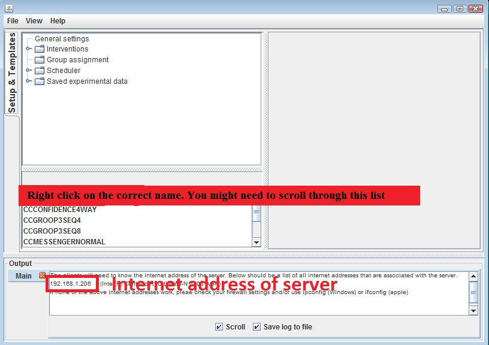
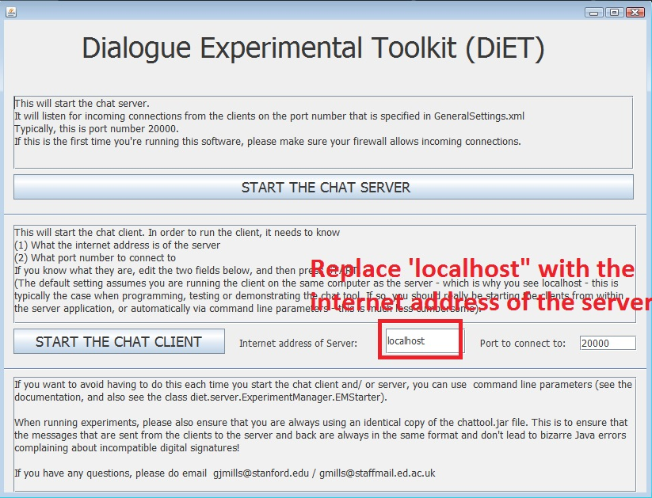
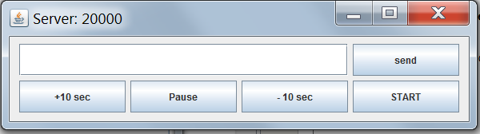
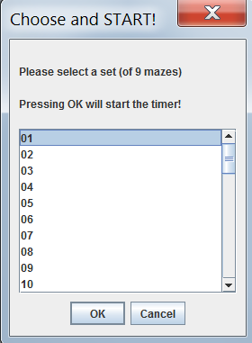
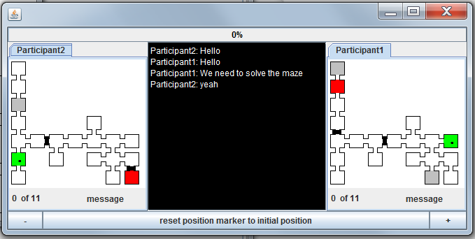
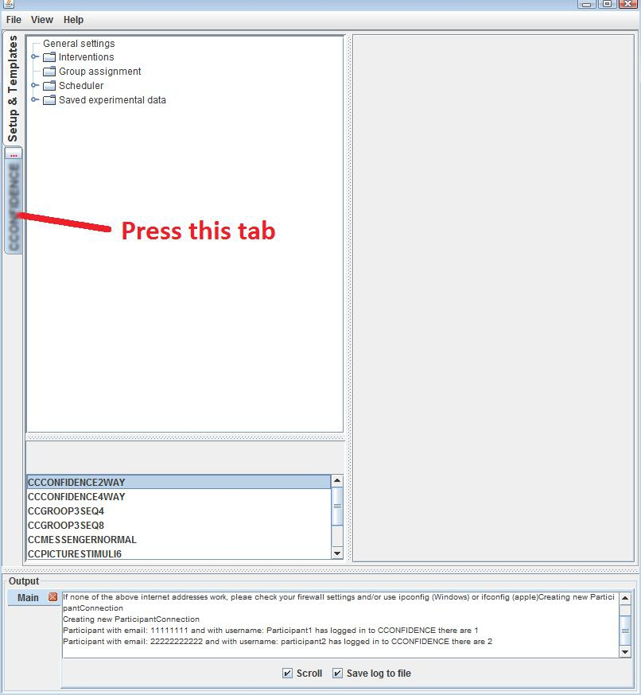
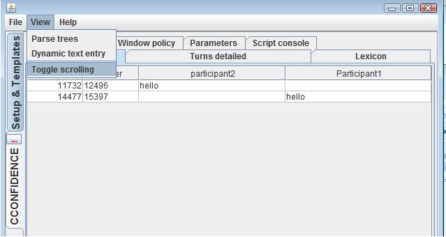

Running the maze game (with a timer) and sets of 9 mazes
These instructions assume that you will be running a setup with two participants. This requires three computers: 1 server and 2 clients. If you just want to test it on a single computer, you can carry out all the steps that are listed below on the same computer
Ensure you have the correct version of java installed on each computer. The version of Java has to be at least version 7 or above. You can download and install the latest version of java from here.
Connect all computers to the network. Make sure that the firewall (on the server) is configured to allow incoming connections on port 20000. You can ensure this by disabling the firewall. If you are using institutional computers you might need to ask IT support to help with this step.
The chattool program is contained in a single file called chattool.jar. This file contains all the code needed to run the server and the clients. Download this file into a separate folder on each computer.
On the server, double-click the file "chattool.jar". This should bring up a window that asks you whether you want to start the server or start the client. Select the option "start the server".
This should bring up another window that looks like the one below:
You need to start the maze game script. The name of this script is CCMAZE_DYADIC_MULTI_2_PARTICIPANTS_SEPARATE_DYADS_MAZEBYMAZE_TIMEOUT. To find and then start this script, scroll through the list (see the red rectangle in the Figure above which says "Right click on the correct name") until you see CCMAZEGAME_2WAY_RANDOMIZEDMAZES. Using the mouse, right-click on this name and select "Run as new experiment". This will start the script, and the server will then wait for connections from the clients.
To connect the clients to the server, you need to know the Internet address of the server. The internet address is displayed in the Output window (see figure above where it says "Internet address of server"). In this figure it shows the internet address as 192.168.1.206. On your system it will be a different number. If there is a single internet address, make a note of this address.
If there are two (or more) Internet addresses displayed on separate lines, you will have to use trial and error and try all of them to see which one works. If there is no number displayed, you will have to use the operating system to get the internet address (on a windows machine use IPCONFIG, on a Mac use IFCONFIG).On each client computer, double-click on the file "chattool.jar". This should load a menu screen:
This screen requires you to tell the client what the server's internet address is. In the red rectangle, replace the text 'localhost" with the internet address of the server. Select "START THE CHAT CLIENT". If the client connects with the server, the screen should disappear, and it should now ask you for a ParticipantID.
This setup will allow you to run up to 12 pairs simultaneously. The server will only let participants connect if they have a ParticipantID that is "AAAAAA", "BBBBBB", "CCCCCC", "DDDDDD", "EEEEEE", "FFFFFF", "GGGGGG", "HHHHHH", "IIIIII", "JJJJJJ", "KKKKKK", "LLLLLL", "MMMMMM", "NNNNNN", "OOOOOO", "PPPPPP", "QQQQQQQQ", "RRRRRR", "SSSSSS", "TTTTTT", "UUUUUU", "VVVVVV", "WWWWWW", "XXXXXX" (ignore the quotes). The reason for this restriction is for "crash" recovery (see the section on crash recovery below), and also provides another level of anonymization! If you are logging in the first client, type in "AAAAAA". If you are logging in the second client, type in "BBBBBB".... and so on. Each client should then ask you for a username. Choose a username and press OK.
Repeat steps 8 - 10 for the second client. If you are running multiple dyads, repeat these steps for all participants. The chat tool server has a window called "Main" in the lower portion of the screen that will show how many participants have logged in. Make sure ALL participants have logged in before continuing with the steps below.
IMPORTANT! This setup will automatically pair participants in alphabetical order. "AAAAAAA" will be paired with "BBBBBB". "CCCCCC" will be paired with "DDDDDD". "EEEEEE" will be paired with "FFFFFF" and so on. If one of the names is missing, then the chat tool will pair with the participant with the next highest ParticipantID, e.g. if "AAAAAA", "CCCCCC", "DDDDDD" and "EEEEEE" log in, it will create pairs (AAAAAA,CCCCCC) and (DDDDDD,EEEEEE).When you have verified that all participants have logged in, you still need to select which set of mazes to load and also start the timer. to do this, there is a control window on the server:  This window has a START button. Press it. There are 4 other buttons that might be useful during an experiment (or when trying to recover from a crash).
- The "send" button allows you to send text to ALL participants that are logged in to the server (for example instructing them to take a break, or inform them that the experiment has finished). To send text, type the text you want to send in the white text area
- +10 sec will add 10 seconds to the timer when running the experiment (this will only work once you've pressed the START button to start the timer)
- -10 sec will subtract 10 seconds from the timer when running the experiment (this will only work once you've pressed the START button to start the timer)
- Pause will pause the timer. Press pause again to restart the timer. (this will only work once you've pressed the START button to start the timer)
Once you've pressed the START button, it will grey out (this is OK, you can only press START once). This should open up another window, similar to:
This window allows you to select a set of mazes. Each number in the list stands for a different set of mazes (all sets have the same 9 mazes, but in different, randomized orders). When you press OK the experiment will start - the clients will display the first maze and the timer will start counting down. If you want to pause the experiment, please use the "control window" from step 12 above.
Also, on the server, for each dyad, a control-panel should appear that shows both participants' mazes, and also shows the dialogue transcript (See below)

The maze game control panel displays both mazes. The grey squares are switches, the green square is the initial start position (the green square is privileged info that is not visible on the participants' screens). The red square is the goal, which is displayed as a red X on the clients
Controlling the maze game on the server: There are three buttons, the plus sign on the right (+) jumps to the next maze. The minus sign jumps to the previous maze, and the button "reset position marker to initial position" restarts the current maze.
IMPORTANT!If you press any of these buttons, please wait 2 seconds before pressing again. This is because the commands need to be relayed to the clients, and then reconfirmed by the server...and then the various timers need to be synchronized.Another way of watching the dialogue on the server (not strictly necessary, since you can look at the dialogue on the Control panel), press the tab (see figure below)
In order to make it so that the window always scrolls down to the last turn, select "View" and then "Toggle scrolling" (see below)

Data collected during the experiment
The data from the experiments is stored in a subfolder of /data/Saved experimental data
To locate the data from the most recent experiment, look for the folder that has the highest prefix. In this folder is a file called turns.txt. The format of this file is identical to CSV (Comma Separated Values), except that the character used to separate the columns is the "|" character.
Recovering from a crash
If one of the clients freezes or becomes unresponsive
Usually this happens for reasons other than the chat-tool, e.g. software-updates.
- reboot the client. Don't reboot the server or the other client
- Repeat steps 8-10 listed above, on how to connect a client to the server. Make sure you use the original Participant ID.
- The server should detect that the participant is logging back on...however, it will reset the current maze so that all participants have to start from their respective green squares (visible on the server control panel). This is in order to ensure that the maze game is in a coherent state.
- If it doesn't login and resume automatically you can still recover from where the experiment left off - see below
Recovering from a more severe crash: how to close everything down and then reload the same maze script
You first need to ensure that everything is closed down before restarting. The steps here are more complex because there is a lot of stuff going on behind the scenes that tries to keep the connections open (in case there are blips on the network). It might be that on one of the clients there is no window displaying the chat tool interface but the chat tool code is running.Killing the clients:
- On each client, click the “close window" button (on windows it's the “x” in the top right”). This should ask you for a password.
- The password is "closedown" (ignore the quotes)
- If you have been prompted for a password on ALL clients, and if all client windows have now disappeared, you can assume that all clients have been shut down. You can now go to the next section on closing down the server
- If you haven't been able to close all the clients, you will need to manually "kill" the chat tool processes on each client
- On windows you need to use the "Windows Task Manager"
- press “Ctrl Alt Delete” and choose “Start the Task Manager”
- Select the “Processes” tab.
- Sort them alphabetically and whenever you see an entry called “javaw” or “java”, select it and then press the “End Process” button.
- On linux or Mac, please see documentation on how to kill a process, see e.g. this or this
Closing down the server Only do this after you have closed down the clients.
- Try closing the server how you would normally close any window. If the main server window vanishes, then you can assume the server was closed down.
- If the window hasn't vanished, then you will need to “kill” the chat tool process
- On windows you need to use the "Windows Task Manager"
- press “Ctrl Alt Delete” and choose “Start the Task Manager”
- Select the “Processes” tab.
- Sort them alphabetically and whenever you see an entry called “javaw” or “java”, select it and then press the “End Process” button.
- On linux or Mac, please see documentation on how to kill a process, see e.g. this or this
Restarting the server
- Because this setup uses prerandomized maze sets, follow all the steps above as if you were startying a new experiment and select the maze set you used before.
- Press "pause" on the control window to pause the timer. (see step 12 above)
- On the maze control window (see step 15), press "+" until it loads the correct maze where the crash happened.
- Press "pause" again to start the timer